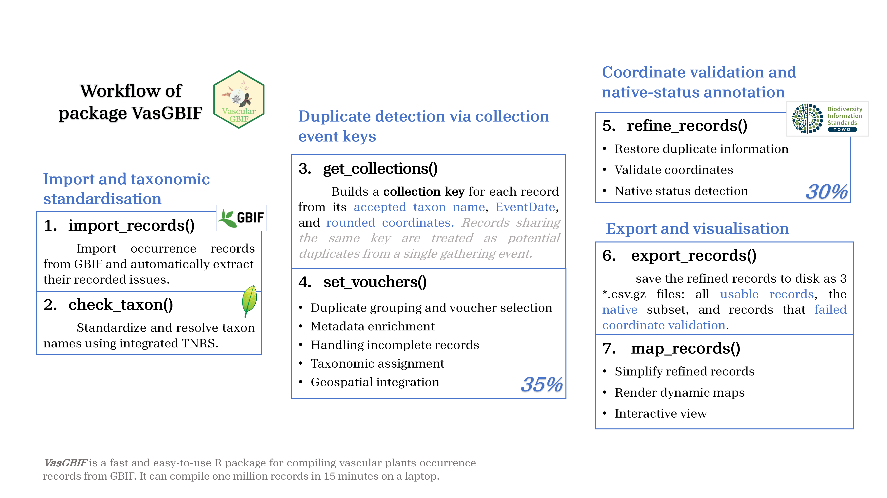

Introduction
Mapping plant distributions is fundamental to understanding biodiversity patterns, accurate distribution data and such information is necessary for researching plant diversity. Global Biodiversity Information Facility, known as GBIF, is a large repository for tracheophyte occurrence records worldwide.
GBIF hosts over 500 million occurrence records of tracheophyte (vascular plants). To deal with them, researchers typically use a suite of packages and scrips, consuming lots of workflows and time, posing significant challenges.
Generally, rgbif, TNRS, CoordinateCleaner, bdc, plantR, NSR and GVS helps a lot. However, for million records datasets, current methods incur substantial computational overhead through manual chaining of disparate packages, necessitating high-performance infrastructure despite advancing computational capabilities.
To rectify this situation, we introduce VasGBIF, an efficient R package that unifies taxonomic resolution, spatial validation, duplicate consolidation, and botanical region annotation within a high-performance framework.
With optimized C/CPP-based dependencies, practical vectorized programming methods leveraging the SIMD instruction sets of modern CPUs and parallelization, VasGBIF compiles one million GBIF occurrence records on a laptop within 15 minutes.
In a word, VasGBIF resolves challenges in reproducibility, scalability, and spatial-taxonomic integrity without increasing adoption barriers for biodiversity researchers.
Installation
One can install VasGBIF by any of the 2 ways below:
- install VasGBIF via official CRAN (Recommend)
install.packages("VasGBIF")- install VasGBIF via GitHub (For dev version)
if (!require(pak)) install.packages(pak)
pak::pak('wyx619/VasGBIF@master')Wiki
Online wiki website is at https://wyx619.github.io/VasGBIF/.
Workflow
4 stages and 7 primary functions of VasGBIF. Before export, approximately 30% of the initial occurrence records are retained as high-quality, non-redundant data.

VasGBIF provides a reproducible, tracheophyte-optimized, and computationally efficient framework for transforming GBIF records into analysis-ready datasets. The package functions are organized into 4 stages built around 7 core functions.
Stage 1: Import and Taxonomic Standardisation
This stage loads the raw GBIF data and resolves taxonomic names to ensure consistency before downstream processing.
Import Records (
import_records): Reads a GBIF occurrence download ZIP, extracts the occurrence table, and parses the GBIF issue flags into record-level logical indicators. No records are filtered at this stage — all diagnostic flags are preserved for later quality scoring.Check Taxon Name (
check_taxon): Submits species- and infraspecific-rank names to the Taxonomic Name Resolution Service (TNRS; Boyle et al. 2013) for resolution against the World Checklist of Vascular Plants (WCVP). Synonyms are resolved to accepted names; names that cannot be matched are retained but flagged as"Not found"for manual review. Names above species rank are not submitted and receiveNAin all WCVP fields.
Stage 2: Duplicate Detection via Collection-Event Keys
This stage groups records into potential collection events and selects the best representative from each group.
Generate Collection-Event Keys (
get_collections): Builds a composite key for each record from its accepted WCVP taxon name, collection date (numeric), and rounded geographic coordinates. The key has the formwcvp_taxon_name|eventDate|latitude|longitude. Rounding precision is user-controlled (default 2 decimal places ≈ 1 km), allowing the user to define the spatial tolerance for what counts as the same collection event. Records sharing the same complete key are treated as potential duplicates; records whose key is missing any component are treated as independent samples.Select Digital Vouchers (
set_vouchers): Within each duplicate group, records are scored on two quality dimensions: metadata completeness (9 fields:recordedBy,recordNumber,year,institutionCode,catalogNumber,locality,stateProvince,countryCode,identifiedBy, each contributing 0–1 point) and geospatial quality (a penalty scale of 0, −1, −3, or −9 derived from GBIF issue severity). The highest-scoring record in each group is designated the master digital voucher and its validated coordinates are propagated to all group members. The most frequent accepted taxon name in the group is assigned as the consensus identification.
Stage 3: Coordinate Validation and Native-Status Annotation
This stage validates the coordinates of digital vouchers, restores missing metadata, and annotates each record with its native-range status.
-
Refine Records (
refine_records): Restores missing metadata fields (eventDate,year,month,day,identifiedBy,countryCode,stateProvince,locality) from duplicate records sharing the same collection key viarestore_duplicates. Validates coordinates with CoordinateCleaner (Zizka et al. 2019) to flag spatial errors such as centroids, capitals, marine coordinates, and zero coordinates. Matches validated coordinates to WGSRPD Level 3 areas and WCVP distribution data viadetect_native_statusto classify each record as native, introduced, extinct, location_doubtful, or unknown. Coordinate validation is parallelized across user-specified threads for speed.
Stage 4: Export and Visualization
Export Records (
export_records): Writes the refined records to disk as three gzip-compressed CSV files: all usable records, the native subset, and records that failed coordinate validation.Map Records (
map_records): Renders the refined records on an interactive map via mapview, with geohash-based decluttering to reduce visual overlap. Records are colour-coded by native status, and multiple basemap layers are supported (OpenStreetMap, Esri World Imagery, and others).
Focused exclusively on GBIF plant occurrence records, VasGBIF can compile one million records within 15 minutes on a laptop without high memory usage.
Anyway, VasGBIF integrates these components into a unified, automated workflow that enhances data standardization, accuracy, and usability, which enables robust, reproducible, and scalable compiling of GBIF tracheophyte records for advanced biodiversity research.
Minimal Complete Workflow
The following code demonstrates the complete VasGBIF workflow from data import to records mapping:
# Step 1: Import (built-in example, or use your own ZIP)
gbif_file <- system.file(
"extdata", "0003386-260721160103020.zip",
package = "VasGBIF"
)
occ_import <- import_records(path = gbif_file)
# Step 2: Resolve taxon names against WCVP
taxa_checked <- check_taxon(occ_import = occ_import, accuracy = 0.9)
# Step 3: Build collection-event keys
collection_keys <- get_collections(
occ_import = occ_import,
taxa_checked = taxa_checked,
precision = 2L
)
# Step 4: Select digital vouchers
voucher <- set_vouchers(
occ_import = occ_import,
taxa_checked = taxa_checked,
collection_keys = collection_keys
)
# Step 5: Validate coordinates and annotate native status
refined_records <- refine_records(
voucher = voucher,
threads = 4
)
# Step 6: Export records
export_records(refined_records = refined_records, export_path = getwd())
# Optional: visualise on an interactive map
map_records(refined_records = refined_records, precision = 3, cex = 3)Performance
VasGBIF achieves outstanding performance through specific technical architectures:
-
C/C++ Backend Integration: Leverages
data.table,stringi, andterra, all implemented in C/C++ - Vectorization Over Explicit Loops: Bypasses R’s interpretive overhead by dispatching to pre-compiled routines
- SIMD Exploitation: Vectorized operations enable compiler-level SIMD auto-vectorization
-
Memory-Efficient Design: In-place modification (
set(),:=) eliminates intermediate copies - Chunk-Based Parallelization: Vectorized processing within chunks, parallel execution across chunks
On a standard laptop, VasGBIF can compile one million occurrence records within 15 minutes.
Reference
Appelhans, Tim, Florian Detsch, Christoph Reudenbach, and Stefan Woellauer. 2023. “Mapview: Interactive Viewing of Spatial Data in r.” https://CRAN.R-project.org/package=mapview.
Boyle, Brad, Nicole Hopkins, Zhenyuan Lu, Juan Antonio Raygoza Garay, Dmitry Mozzherin, Tony Rees, Naim Matasci, et al. 2013. “The Taxonomic Name Resolution Service: An Online Tool for Automated Standardization of Plant Names.” BMC Bioinformatics 14 (1): 16. https://doi.org/10.1186/1471-2105-14-16.
Chirico, Michael. 2023. “geohashTools: Tools for Working with Geohashes.” https://CRAN.R-project.org/package=geohashTools.
De Melo, Pablo Hendrigo Alves, Nadia Bystriakova, Eve Lucas, and Alexandre K. Monro. 2024. “A New R Package to Parse Plant Species Occurrence Records into Unique Collection Events Efficiently Reduces Data Redundancy.” Scientific Reports 14 (1): 5450. https://doi.org/10.1038/s41598-024-56158-3.
Vilela, Bruno, and Fabricio Villalobos. 2015. “letsR: A New R Package for Data Handling and Analysis in Macroecology.” Edited by Timothée Poisot. Methods in Ecology and Evolution 6 (10): 1229–34. https://doi.org/10.1111/2041-210x.12401.
Zizka, Alexander, Daniele Silvestro, Tobias Andermann, Josué Azevedo, Camila Duarte Ritter, Daniel Edler, Harith Farooq, et al. 2019. “CoordinateCleaner : Standardized Cleaning of Occurrence Records from Biological Collection Databases.” Edited by Tiago Quental. Methods in Ecology and Evolution 10 (5): 744–51. https://doi.org/10.1111/2041-210X.13152.
GBIF.org (23 July 2026) GBIF Occurrence Download doi:10.15468/dl.nt5exp